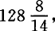
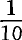
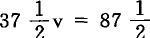

第十一章 工资的一般变动对生产价格的影响
假定社会资本的平均构成是80c＋20v，利润是20%。在这种情况下，剩余价值率就是100%。假定其他一切条件相同，工资的一般提高就是剩余价值率的降低。对平均资本来说，利润和剩余价值是一致的。假定工资提高25%。以前花费20来推动的劳动量，现在就要花费25。因此，一次周转的价值以前是80c＋20v＋20p，现在是80c＋25v＋15p。可变资本推动的劳动和以前一样，生产一个40的价值额。现在v由20增加到25，所以余额m或p只＝15。利润15，按105计算，等于%，这是新的平均利润率。因为平均资本生产的商品的生产价格是和它们的价值一致的，所以这种商品的生产价格不变；因此，工资的提高，虽然引起利润的降低，但不会引起商品价值和价格的变动。
以前，当平均利润＝20%时，一个周转期间所生产的商品的生产价格，等于它们的成本价格加上按这个成本价格计算的20%的利润，也就是＝k＋kp′＝k＋在这里，k是一个可变量，随着加入商品的生产资料的价值不同而不同，并且随着生产商品所使用的固定资本转移到产品中去的损耗量不同而不同。现在，生产价格是
我们先来看这样一个资本，它的构成低于社会平均资本原来的构成80c＋20v（现在变为）；例如50c＋50v。在这里，为了简便起见，我们假定全部固定资本都作为损耗加入年产品，并假定周转时间与Ⅰ相同，那么，在工资提高之前，年产品的生产价格就是50c＋50v＋20p＝120。工资提高25%，推动同量劳动的可变资本就由50提高到如果年产品还是按照以前的生产价格120出售，结果就是50c＋因而利润率是但新的平均利润率是并且因为我们假定其他一切条件相同，所以，这个50c＋的资本也应该赚到这个利润。一个的资本，按照的利润率计算，赚到的利润。因此，这个资本所生产的商品的生产价格，现在就是50c＋＋在这里，由于工资提高25%，同量该种商品的生产价格就由120提高到也就是说，提高7%以上。
反过来，我们再来看这样一个生产部门，它的构成高于平均资本，例如92c＋8v。原来的平均利润在这里也是＝20；我们再假定全部固定资本加入年产品，周转时间也与Ⅰ和Ⅱ相同，商品的生产价格在这里也就＝120。
由于工资提高25%，推动等量劳动的可变资本就由8增加到10，因而商品的成本价格就由100增加到102，而平均利润率已经由20%下降到但是，这样，现在102应有的利润是因而总产品要按k＋kp′＝102＋来出售。这就是说，生产价格由120下降到即下降
可见，由于工资提高25%：
2.对于较低构成的资本来说，商品的生产价格提高了，虽然不是按照利润降低的比例而提高；
3.对于较高构成的资本来说，商品的生产价格降低了，虽然也不是按照利润降低的比例而降低。
因为平均资本的商品的生产价格保持不变，和产品的价值相等，所以一切资本的产品的生产价格的总额也保持不变，和总资本所生产的价值的总额相等；一方面的提高，和另一方面的降低，对总资本来说，会平均化为社会平均资本的水平。
商品的生产价格在例Ⅱ中提高了，在例Ⅲ中降低了，这种由剩余价值率降低即由工资一般提高引起的相反的结果，已经表明：在这里谈不到工资的提高由价格来补偿，因为Ⅲ中生产价格的降低当然不能补偿资本家的利润的降低，Ⅱ中价格的提高也不能防止利润的降低。相反，在价格提高和价格降低这两个场合，利润都和价格保持不变的平均资本的利润相同。对Ⅱ和对Ⅲ来说，利润都同样是那个已经下降即下降略多于25%的平均利润。由此可以得出结论，如果Ⅱ的价格不提高，Ⅲ的价格不降低，Ⅱ就要低于新的已经下降的平均利润出售，Ⅲ就要高于它出售。不言而喻，根据每100资本中投在劳动上的是10，25，还是50的不同情况，工资的提高，必然对以资本的投在工资上的资本家和以资本的或投在工资上的资本家，产生极不相同的影响。根据资本高于或低于社会平均构成的不同情况，一方的生产价格会提高，另一方的生产价格会降低，这只是由于利润平均化为新的已经下降的平均利润。
工资的一般降低和与之相适应的利润率的一般提高，从而平均利润的一般提高，对各个按相反方向同社会平均构成相偏离的资本所生产的商品的生产价格，会产生怎样的影响呢？我们只要把以上的说明反过来，就可以得到结果（这一点李嘉图没有研究过）。
Ⅰ.平均资本＝80c＋20v＝100；剩余价值率＝100%；生产价格＝商品价值＝80c＋20v＋20p＝120；利润率＝20%。假定工资降低同一不变资本就由15v来推动，而不是由20v来推动。因此，商品价值就是80c＋15v＋25p＝120。v所生产的劳动量仍旧不变，不过由此创造的新价值会按不同的比例分配在资本家和工人之间。剩余价值由20增加到25，剩余价值率由增加到也就是由100%增加到按资本95计算的利润现在＝25，所以按100计算的利润率＝用百分比表示的新的资本构成现在是
Ⅱ.低构成。如上所说，原来是50c＋50v。工资降低v就减少到全部预付资本就减少到50c＋。把新的利润率应用到这个资本上，就得到同一个商品量以前值120，现在值价格几乎降低10。
Ⅲ.高构成。原来是92c＋8v＝100。工资降低8v就减少到6v，总资本就减少到98。因此，商品的生产价格，以前是100＋20＝120，现在，在工资降低以后，是98＋几乎提高4。
这样，我们看到，只要按相反的方向重述以上的说明并加上必要的修改就行了；工资一般降低的结果，是剩余价值和剩余价值率的一般提高，并且在其他条件不变的情况下，还有利润率的一般提高，虽然比例不同；对低构成的资本所生产的商品来说，生产价格会降低，对高构成的资本所生产的商品来说，生产价格会提高。这和工资一般提高时的结果恰好相反。(1)在这两个场合，——工资提高的场合和工资降低的场合，——我们都假定工作日不变，一切必要生活资料的价格也不变。因此，在这里，工资只有在它原来就高于劳动正常价格的情况下，或在被压低到这个价格以下的情况下，才可能降低。如果工资的提高或降低是由通常进入工人消费的商品的价值从而生产价格的变动引起的，事情会发生什么样的变化，这将部分地在论述地租的那一篇进一步研究。但在这里，我们要断然指出：
如果工资的提高或降低由必要生活资料的价值变动引起，那么以上所说，只有在那些因自身的价格变动而使可变资本增加或减少的商品，也作为构成要素进入不变资本，因而不只是影响工资的情况下，才需要加以修改。如果它们只是影响工资，那么以上所说就已经包含所要说的一切了。
在整个这一章，一般利润率的形成，平均利润的形成，从而价值到生产价格的转化，都假定为既定的事实。问题只是，工资的一般提高或降低怎样影响被假设为既定的商品生产价格。同本篇考察的其他重要之点相比，这是一个很次要的问题。但在这里提到的问题中，只有这个问题是李嘉图研究过的，并且我们将会看到，他对这个问题的研究也是片面的和有缺陷的。
(1) 非常奇怪的是：李嘉图（他当然按照和这里不同的方法来论述，因为他不理解价值平均化为生产价格的问题）从来没有想到这种情况，只是考察了第一种情况，即工资的提高和它对商品生产价格的影响。一群只会模仿的奴仆甚至没有想到作出这个非常明显的、事实上只是同义反复的应用。